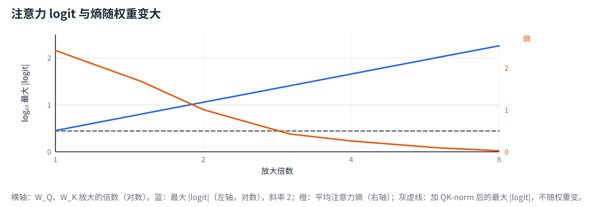
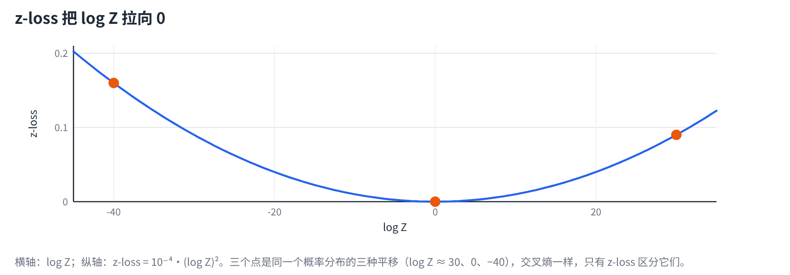
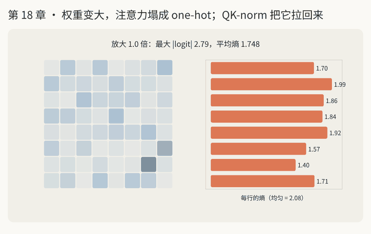

第 18 章 · 训练稳定性：注意力 logit 越涨越大、输出 logit 发散；QK-norm 和 z-loss 各治什么
本地运行
git clone https://github.com/wikieden/beyond-transformer
cd beyond-transformer/code/notebooks
pip install jupyterlab torch numpy
jupyter lab ch18_stability.ipynb也可以下载后直接用 VS Code 打开 .ipynb 运行。需要 GPU 的章节在 Colab 里选「代码执行程序 → 更改运行时类型 → GPU」。
本章回答：大模型训练常常跑着跑着 loss 突然飙上去。两种最常见的病因是什么？为什么注意力的 logit 会随着权重“平方地”长大，长大了为什么致命？QK-norm 做了什么让它长不大？输出层的 log Z 为什么会漂走，z-loss 怎么把它拉回来？OLMo 2 这些工业模型又是怎么组合这几招的？
讲解日期：2026-11-26 · 上一章：第 17 章 长文本外推 · 下一章：第 19 章 巨大激活与 attention sink
对应原文：Small-scale proxies for large-scale Transformer training instabilitiestransformer-deep-dive/materials/text/papers/small-scale-proxies-instability-2309.14322.txt引言 L74–L125（两种不稳定、qk-layernorm、z-loss、LR 敏感度）、§3.1.1 Attention logit growth 与 Figure 2 L212–L258、§3.1.2 Output logit divergence L324–L352（log Z 漂成很负，z-loss = 1e-4·log²Z）；OLMo 2olmo2-2501.00656.txt§3.3 L270–L285（RMSNorm、reordered norm、QK-norm、z-loss、RoPE θ = 5e5）
本章缩写：logit（进 softmax 之前的分数）；QK-norm（对 q、k 先做一次 norm 再点积；论文里叫 qk-layernorm）；Z = partition function（配分函数：softmax 的分母 Σe^{y_i}）；z-loss（把 log Z 拉向 0 的辅助损失）；LR sensitivity（学习率敏感度：学习率偏离最优时 loss 变差多少）；entropy（熵：分布有多“分散”，均匀时最大）；nats（以 e 为底的信息量单位）。全部缩写见 附录 · 缩写与术语表
讲解
第一步：注意力 logit 随权重平方增长（2026-11-26）
类比：两个人的嗓门都变大一倍，吵架的音量变大四倍。 q = W_Q x、k = W_K x，两者都和权重成正比；分数 q·k 是两者相乘，所以 W_Q、W_K 各变大 c 倍，分数变大 c² 倍。
训练中权重会慢慢长大（尤其学习率大、没有足够的权重衰减时）。x 已经被 LayerNorm 过，量级固定，所以 logit 的增长全来自 W_Q、W_K。
数字演示（16 个 token、d = 64，x 已经过 LayerNorm，W 按 1/√d 初始化后整体乘 c）：
| W_Q、W_K 乘 | 最大 |logit| | 每行 softmax 的平均熵（均匀是 2.773） | 平均最大权重 |
|---|---|---|---|
| 1 | 2.84 | 2.419 | 0.213 |
| 2 | 11.36 | 1.008 | 0.648 |
| 4 | 45.44 | 0.259 | 0.903 |
| 8 | 181.76 | 0.024 | 0.995 |
权重 ×2，logit ×4，严格的平方关系。到 ×8 时每一行的 softmax 几乎都是 one-hot：每个 query 只看一个 key，熵几乎为 0。这叫注意力熵坍缩：softmax 饱和，梯度几乎为 0（前作第 7 章），而唯一被选中的那个位置梯度又很大，训练就不稳定了。论文 Figure 2（L212–L258）在小模型上用大学习率复现了这个现象：最大注意力 logit 一路涨到上千，loss 发散。

图 18-1 · 横轴是 W_Q、W_K 被放大的倍数。蓝：最大 |logit|（对数纵轴，左），斜率是 2（平方增长）；橙：平均注意力熵（右轴），从接近均匀掉到接近 0。灰虚线：加了 QK-norm，logit 不随权重变一句话：注意力 logit 和 W_Q、W_K 的乘积成正比，权重变大 c 倍、logit 变大 c² 倍，softmax 塌成 one-hot，训练失稳。
第二步：QK-norm：先把 q、k 归一化（2026-11-26）
既然问题出在 q、k 的大小，就在点积前把它们各自 norm 一下（论文的 qk-layernorm，L110；OLMo 2 用 RMSNorm，L279–L281）：
q、k 的均方根都是 1，长度都是 √d，点积最多 d，除以 √d 后 |logit| ≤ √d。权重怎么长，logit 都不会超过这个上界。
数字演示（同上，加 QK-norm）：
| W_Q、W_K 乘 | 最大 |logit| | 平均熵 |
|---|---|---|
| 1 | 2.78 | 2.381 |
| 8 | 2.78 | 2.381 |
权重放大 8 倍，结果一模一样。实际的 QK-norm 带一个可学的缩放 g，模型需要尖的注意力时可以自己学大，但不会因为权重“无意中”变大而失控。
论文的主要结论（L95–L125）：加了 QK-norm 之后，学习率敏感度大幅下降：学习率开得比最优值大很多，loss 也只变差一点点。Qwen3 就用 QK-norm 换掉了 QKV 的 bias（第 24 章）。
一句话：QK-norm 在点积前把 q、k 归一化，logit 有了 √d 的上界，不再随权重平方增长。
第三步：输出 logit 发散和 z-loss（2026-11-26）
第二种病发生在输出层，而且多在训练后期（L324–L345）。
softmax 对整体平移不敏感：所有 logits 加同一个数，概率不变。所以 log Z（softmax 分母的对数）没有任何力量把它固定住，可以慢慢漂到很负的值（论文 Figure 4：一个 2.4M 参数的模型、学习率 0.1 时出现）。漂得太远，数值精度出问题，loss 就发散了。
z-loss（L345–L347）：加一项辅助损失
把 log Z 拉向 0。它不改变概率分布，只是选定了“平移到哪里”。
数字演示（同一个概率分布 [0.9933, 0.0067, 0.0]，三种平移）：
| logits | log Z | z-loss |
|---|---|---|
| [30, 25, 20] | 30.0068 | 0.090041 |
| [0, −5, −10] | 0.0068 | 0.000000 |
| [−40, −45, −50] | −39.9932 | 0.159946 |
三种 logits 的交叉熵完全一样，只有 z-loss 能区分它们，并且偏爱 log Z ≈ 0 的那一种。论文还发现，权重衰减对大一点的模型也能缓解这个问题（L349–L352）。

图 18-2 · 横轴是 log Z，纵轴是 z-loss = 10⁻⁴·(log Z)²。三个点是表里的三种平移；交叉熵对这三种完全一样，只有 z-loss 把 log Z 往 0 拉一句话：softmax 对整体平移不敏感，log Z 会在训练后期漂走；z-loss = 1e-4·log²Z 把它拉回 0，不改变预测的概率。
第四步：工业上怎么组合（2026-11-26）
OLMo 2 §3.3（L270–L285）把一套稳定性改动放在一起：
| 改动 | 治什么 |
|---|---|
| RMSNorm（第 13 章） | 更快，效果不变 |
| reordered norm：h = x + RMSNorm(Attn(x)) | 把 norm 放到子层输出，控制每层往主干上加多少（第 12 章的变体） |
| QK-norm | 注意力 logit 增长 |
| z-loss | 输出 logit 发散 |
| RoPE θ = 5 × 10⁵ | 位置编码的分辨率（第 15、17 章） |
还有几样“软”的手段也有用：warmup（第 4 章）、梯度裁剪、权重衰减、更小的 Adam ε（论文 §3.2）。研究稳定性的一个好办法是论文提出的小模型代理：在小模型上用很大的学习率，就能复现大模型的失稳，从而便宜地比较各种对策。
场景代码：注意力里加 QK-norm、输出层加 z-loss（真实写法；本书 chapter-code 只用 NumPy，这段没跑过）：
q, k = self.q_norm(q), self.k_norm(k) # nn.RMSNorm(head_dim)，在 RoPE 之前
out = F.scaled_dot_product_attention(q, k, v, is_causal=True)
...
logits = self.lm_head(h)
log_z = torch.logsumexp(logits.float(), dim=-1)
loss = F.cross_entropy(logits.view(-1, V), y.view(-1)) + 1e-4 * (log_z ** 2).mean()
复现“3 个宽度 × 6 个学习率”的 LR 敏感度曲线、记录最大注意力 logit 随步数的增长、比较加不加 QK-norm 和 z-loss，是里程碑 T-M4。
一句话：工业模型同时用 RMSNorm、子层输出的 norm、QK-norm、z-loss 和更大的 RoPE 底数；小模型加大学习率就能便宜地复现大模型的失稳。
动画演示：权重变大，注意力塌成 one-hot

可交互版：animations/18-stability.html（滑块：W_Q、W_K 放大的倍数；勾选框：QK-norm）。
怎么看：
- 左边是 8 × 8 的注意力权重图，越深越大（第一步）；
- 把倍数从 1 拖到 8：每一行慢慢只剩一个深色格子，右上角的熵掉到接近 0；
- 勾上 QK-norm：不管倍数多大，图都不变（第二步）。
练习与作答记录
题 1（第一步）：某层的最大注意力 logit 是 3。训练中 W_Q 变大 1.5 倍、W_K 变大 2 倍，最大 logit 大约变成多少？
题 2（第二步）：head_dim = 128，加了不带可学缩放的 QK-norm 之后，注意力 logit 的绝对值最多是多少？
题 3（第三步）：logits = [10, 8, 6]，log Z 大约是多少？z-loss（λ = 1e-4）是多少？把 logits 整体减 10 之后呢？交叉熵变不变？
口诀
两人嗓门各翻倍，吵架变四倍：W 大 c 倍，logit 大 c 方；softmax 塌成独热，熵坍缩。
QK 先 norm 再点积，logit 有上界根号 d。
softmax 不管平移，log Z 后期漂走；z-loss 万分之一乘 log Z 平方，拉回零、不改概率。
工业组合：RMSNorm、输出 norm、QK-norm、z-loss、大底数 RoPE；小模型大学习率当代理。
本章复习卡片
必背：B48–B49（B48 注意力 logit 增长、熵坍缩与 QK-norm；B49 输出 logit 发散与 z-loss、OLMo 2 的组合）。练习做完后，按答错、卡住的地方再补。
附录 · 延伸阅读
留给以后深入学习用，不影响本章主线。★ 是建议先读的。
推荐阅读
| 读什么 | 读哪里 | 读它为了什么 |
|---|---|---|
| ★ Small-scale proxies for large-scale Transformer training instabilities（Wortsman 等 2023） | 引言 L74–L125；§3.1.1 L212–L258；§3.1.2 L324–L352 | 两种不稳定和两种对策 |
| ★ OLMo 2（2025） | §3.3 L270–L285 | 工业模型的稳定性配方 |
| Scaling Vision Transformers to 22B（Dehghani 等 2023） | QK-norm 一节（本地没有文本版） | QK-norm 的出处 |
| PaLM（Chowdhery 等 2022） | z-loss 一段（本地没有文本版） | z-loss 的出处 |
| 《数学与实验统计》第 44 章 训练稳定性 | 全部 | z-loss、QK-norm、fp8 的数学 |
数学原理
- logit 的平方增长：s = xᵀW_Qᵀ W_K y / √d，W_Q、W_K 各乘 c，s 乘 c²。
- 熵与饱和：softmax 越尖熵越小；接近 one-hot 时 ∂p/∂s 接近 0（被选中的位置除外）。
- QK-norm 的上界：‖Norm(q)‖ = ‖Norm(k)‖ = √d（RMS 为 1），|q·k|/√d ≤ √d。
- softmax 的平移不变：softmax(y + c) = softmax(y)，log Z(y + c) = log Z(y) + c；z-loss 打破这个自由度。
公式清单
| 公式 | 意思 |
|---|---|
| \(s = q^\top k/\sqrt d \propto \lVert W_Q\rVert\lVert W_K\rVert\) | 注意力 logit 的量级 |
| \(s = \text{Norm}(q)^\top\text{Norm}(k)/\sqrt d\)，\(\lvert s\rvert \le \sqrt d\) | QK-norm |
| \(Z = \sum_j e^{y_j}\) | 配分函数 |
| \(\mathcal L_z = 10^{-4}(\log Z)^2\) | z-loss |
代码对照：把本章的数字用代码算一遍
NumPy。代码在仓库本地
beyond-transformer/solutions/chapter-code/ch18_stability.py，配套测试tests/test_ch18.py，notebook 在notebooks/ch18_stability.ipynb：
bash cd beyond-transformer/solutions/chapter-code uv run python ch18_stability.py uv run pytest tests/test_ch18.py
讲义 ↔ 代码：
| 讲义 | 公式 | 写法 | 跑出来 |
|---|---|---|---|
| 第一步 logit 增长 | ∝ c² | attn_stats(c) |
2.84 → 181.76，熵 2.42 → 0.02 |
| 第二步 QK-norm | Norm(q)·Norm(k) | attn_stats(c, qk_norm=True) |
不随 c 变 |
| 第三步 z-loss | λ log²Z | z_loss(logits) |
0.090、0、0.160 |
关键几行：
q, k = x @ (scale * wq).T, x @ (scale * wk).T # 权重放大 scale 倍
if qk_norm: q, k = rms(q), rms(k) # QK-norm：点积前归一化
s = q @ k.T / np.sqrt(D)
return float(z), float(lam * z * z) # z-loss = λ·(log Z)²
代码里才看得到的 2 件事：
- QK-norm 的位置：这里在点积之前 norm；真实模型里还有 RoPE，一般是先 norm 再转（norm 改长度，旋转不改长度，顺序反过来结果也差不多）。
- 只模拟了“权重已经变大”的结果：训练过程中 logit 怎么一步步长大、加了 QK-norm 后高学习率端不再发散，是里程碑 T-M4。
自己改一改（不影响练习答案）：
- 把
attn_stats的 D 改成 256，同样放大 4 倍，熵掉得更快还是更慢？ - 给
rms乘一个可学缩放 g = 3（不再是 1），QK-norm 后的最大 logit 上界变成多少？